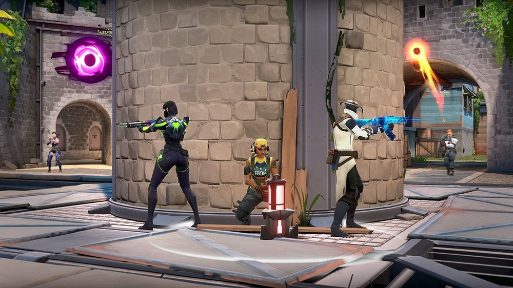

First Player Shooter | Valorant
Written by - Jay Davis x santoryuu#2001
The same fantastic gunplay from CS is present in Valorant, but the game's mechanics keep it fresh. The selling system, requesting system, and pinging system are just a few of the lesser mechanics that this game introduces, and some areas that Counter-Strike failed in. With characters that can use their powers in ways that work well with others, the various characters bring about a new level of team play and enable the creation of fantastic plays.
The game's compatibility with potato PCs is another significant aspect. This game may be played smoothly and without many issues on a low-end computer. Unlike Valve, Riot genuinely pays attention to its community, and the game improves with each patch.
For me and my buddies, this game was a breath of fresh air because CS:GO may get boring after a while. I wholeheartedly recommend this game to everyone curious about it. A GAME MUST PLAY!
Share your thoughts about your favorite game!